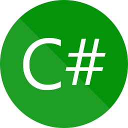
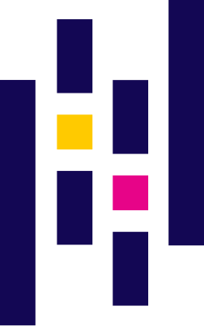

Welcome to My Portfolio!
I’m a Data Engineer @ DATABROS working remotely from Kraków, currently pursuing an MSc in Data Science at Cracow University of Technology. My daily work involves Python (incl. Connexion), Ansible, and maintaining data pipelines and infrastructure. I’m deeply interested in quantitative finance and aim to build a career in the financial sector, blending data engineering with statistical modeling.
As part of my engineering degree, I developed an options calculator using the Black-Scholes model and real-time market data from the Finnhub API. The project also featured a Twitter sentiment analysis on $NFLX and $NVDA using LSTM, Random Forest, and XGBoost models.
My current Master’s thesis focuses on a quantitative pairs trading system with cointegration testing, dynamic β (Kalman filter), and portfolio risk management — all wrapped in an interactive Streamlit interface.
Technologies I am using:

Python
Selenium

HTML4/HTML5, CSS, JS

Bootstrap
SQL, Oracle, SQLite

C#

.NET Framework, WPF
JSON

Pandas, Scikit-learn, Joblib